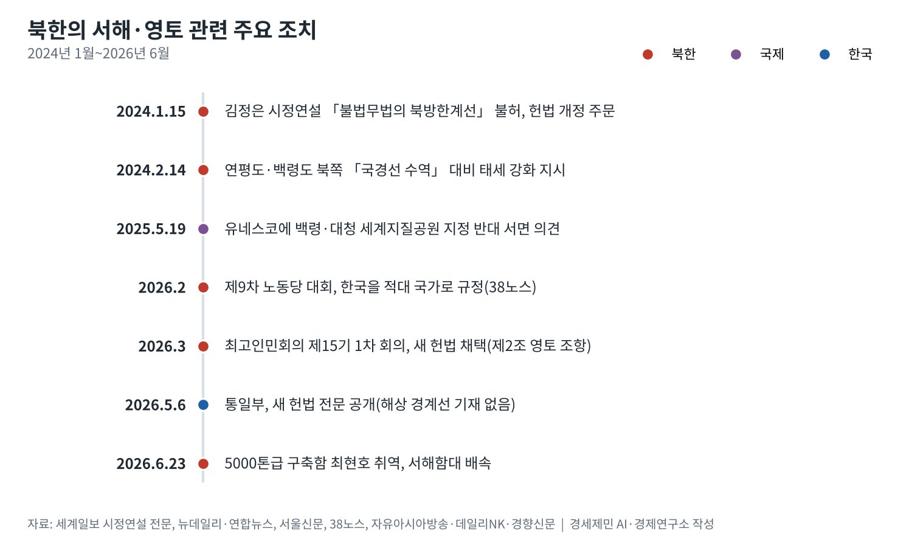
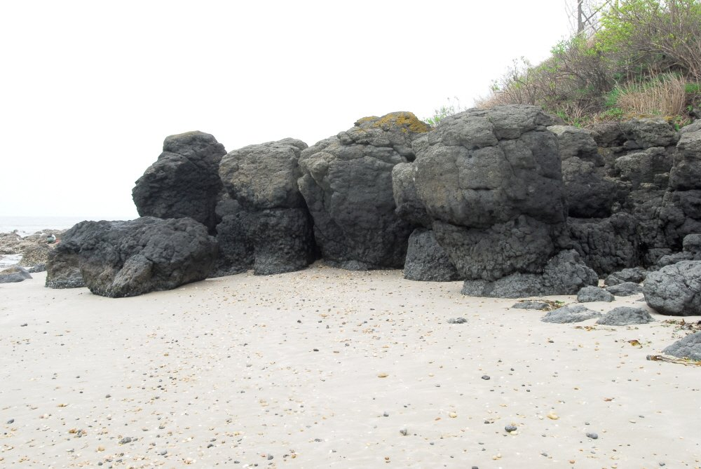

[서해평화 가능한가⑤] 북한의 계산, 생존에서 협상력까지
2024년 「불법무법의 북방한계선」 선언, 2026년 3월 새 헌법에 영토 조항 신설
새 헌법은 「남쪽으로 대한민국과 접한」 영토만 적고 바다의 선은 비워 둬
유네스코 지침 한 조항으로 백령·대청 세계지질공원 심사 1년 넘게 멈춰
AI경세제민=김갑봉 기자 | 북한이 2026년 3월 새 헌법에 영토 조항을 넣었다. 제2조는 영역을 북쪽으로 중국·러시아, 남쪽으로 대한민국과 접한 영토로 적었다. 통일부는 5월 6일 기자단 간담회에서 새 헌법 전문을 공개했다.
바다의 선은 적지 않았다. 조항은 영해와 영공을 그 영토에 「기초하여 설정」한다고만 썼다. 서해 북방한계선(NLL)을 대신할 해상 경계선은 헌법 어디에도 없다. 북한은 선을 긋지 않고 여백을 남겼다.
북한의 서해 셈법은 세 갈래다. 말로는 최대치를 내세우고, 법에는 여백을 두고, 국제기구에서는 절차를 쓴다. 생존의 계산이 협상력으로 바뀌는 길을 북한 원문과 외신, 미국 의회 자료로 짚는다.
「0.001㎜」 선언에서 헌법 조항까지
김정은 국무위원장은 2024년 1월 15일 최고인민회의 시정연설에서 서해를 직접 겨눴다. 「불법무법의 《북방한계선》을 비롯한 그 어떤 경계선도 허용될수 없으며」라고 말했다. 영토·영공·영해를 0.001㎜라도 침범하면 전쟁도발로 보겠다고 했다.
같은 연설에서 그는 전쟁이 나면 한국을 「점령, 평정, 수복하고 공화국령역에 편입」하는 문제를 헌법에 반영하자고 했다. 헌법에서 「자주, 평화통일, 민족대단결」 표현을 지워야 한다는 주문도 내놨다.
한 달 뒤 말은 더 구체적이 됐다. 조선중앙통신은 김 위원장이 2024년 2월 14일 연평도·백령도 북쪽 「국경선 수역」의 대비 태세 강화를 지시했다고 전했다. 연합뉴스는 그가 NLL을 「유령선」이라 불렀다고 보도했다.
38노스 번역으로 2026년 2월 제9차 노동당 대회 총화는 한국을 매우 적대적인 국가이자 영원한 적으로 보겠다고 했다. 말의 수위는 2024년보다 낮아지지 않았다.
이어 3월 최고인민회의 제15기 제1차 회의가 새 헌법을 채택했다. 미국 북한 전문 매체 38노스는 통일 틀과 한 민족 표현이 헌법에서 빠졌다고 분석했다.

헌법에 선을 긋지 않은 이유
새 헌법 제2조는 「영역에 대한 그 어떤 침해도 절대로 허용하지 않는다」고 적었다. 그러나 무엇이 침해인지 가를 바다의 선은 정하지 않았다. 자유아시아방송은 남쪽 육상과 해상 경계선이 구체적으로 언급되지 않았다고 전했다.
자유아시아방송은 이를 현실적 분쟁 가능성을 피하려는 선택으로 풀이했다. 데일리NK가 인용한 이정철 교수도 북한이 NLL을 부정하는 해상 국경선을 헌법에 쓰지 않았다고 봤다. 말은 강하게, 법은 느슨하게 둔 셈이다.
여백은 북한에 선택지를 준다. 헌법에 선을 적으면 그 선을 지키지 못할 때 체면을 잃는다. 비워 두면 필요할 때 2024년의 「국경선」을 꺼내고, 협상이 열리면 물러설 자리도 생긴다.
이 바다의 선은 처음부터 다퉈 왔다. 1953년 7월 27일 정전협정은 바다의 경계를 긋지 않았다. 협정은 백령도·연평도를 비롯한 다섯 섬을 유엔군 관할로 남겼고, NLL은 한 달쯤 뒤 유엔군사령부가 그은 선으로 알려져 있다.
미국 북한위원회(NCNK)는 북한이 1999년 자기 방식의 해상 경계선을 일방적으로 선포했다고 정리했다. 2010년에는 천안함이 NLL 바로 남쪽에서 침몰했고, 11월 연평도 포격으로 민간인 2명을 포함해 4명이 숨졌다.
무게중심을 서해로 옮긴 해군
말과 법 다음은 힘이다. 경향신문이 인용한 조선중앙통신 보도를 보면 북한은 6월 23일 남포항에서 5000톤급 구축함 최현호를 취역시켰다. 중앙군사위원회 명령으로 서해함대에 배속했다.
김 위원장은 해군이 이제 연안 방어 군종에 머물지 않는다고 말했다. 큰 군함을 댈 현대적 해군기지가 시급하다고도 했다. 38노스는 최현호의 서해 성능 시험이 NLL을 군사적으로 흔드는 선택지가 살아 있음을 보여 준다고 평가했다.
힘의 바탕에는 러시아가 있다. 새뮤얼 퍼파로 미국 인도태평양사령관은 4월 의회 서면 진술에서 북한이 러시아에 탄도미사일과 수천 컨테이너의 탄약을 보냈다고 밝혔다. 북한군이 쿠르스크 전투에 참여했다고도 적었다.
전쟁 물자를 내준 대가가 무엇인지는 공개 자료로 확인되지 않는다. 다만 북한이 제재 속에서도 외부 자원을 얻을 통로를 넓힌 점은 분명하다. 생존의 계산이 군사력과 외교 카드로 쌓이는 구조다.

유네스코라는 무대, 총성 없는 거부권
2025년 5월 19일 북한은 유네스코에 백령·대청 세계지질공원 지정에 반대하는 서면 의견을 냈다. 인천시가 2024년 11월 낸 신청이었다. 6월로 잡혔던 유네스코 현장실사는 보류됐다.
근거는 유네스코 세계지질공원 운영지침 5.4(iv)조다. 회원국의 서면 이의가 들어오면 후보지는 과학 평가로 넘어가지 않는다. 지침은 「관련 회원국들이 해결책을 찾아야 한다」고 적었다. 다른 중재 기구는 정하지 않았다.
북한은 이 조항으로 비용 없이 심사를 세웠다. 해결은 당사국 몫인데 정작 북한은 대화를 거부한다. 38노스 번역으로 김 위원장은 3월 최고인민회의 연설에서 한국을 단호히 배척하고 무시하겠다고 했다. 문을 잠근 쪽이 열쇠도 쥔 구조다.
경기일보와 경인일보는 2026년 3월 18일에도 절차가 재개되지 않았다고 전했다. 신청 뒤 1년 11개월이 지난 10월 21일까지 재개 발표는 찾지 못했다. 섬의 지질 가치와 무관한 이유로 국제 절차가 멈춘 사례다.
계산의 끝은 협상력인가, 고립인가
북한이 쌓는 카드의 값은 상대가 정한다. 미국 국가안보전략(NSS)은 2025년 12월 북한을 아예 언급하지 않았다. 2026년 1월 미국 국방전략(NDS)은 한국이 대북 억제의 1차 책임을 질 능력이 있다고 적었다.
미국이 북한 문제를 한국에 넘기면 북한의 서해 카드는 워싱턴보다 서울을 향한다. 그런데 북한은 서울과의 대화를 거부한다. 협상력은 쌓이지만 쓸 상대를 스스로 줄이는 모순이 생긴다.
헌법의 여백과 유네스코 이의, 서해함대의 새 구축함은 한 방향을 가리킨다. 북한은 서해를 닫힌 분쟁으로 두되 문은 완전히 잠그지 않는다. 한국 정부가 그 여백을 우발 충돌의 공간이 아닌 협상의 공간으로 바꿀 수 있는지가 다음 과제다.
참고문헌
기관 자료
- UNESCO, 「Statutes of the International Geoscience and Geoparks Programme; Operational Guidelines for UNESCO Global Geoparks」(제38차 총회 채택, 5.4(iv)조), 노르웨이 순호르들란 세계지질공원 게재본. https://www.geoparksunnhordland.no/wp-content/uploads/2024/12/UGGP-Statutes-and-guidelines.pdf
- UNESCO, "UNESCO Global Geoparks applications"(회원국 서면 이의와 3개월 유예 기간). https://www.unesco.org/en/iggp/geoparks/applications
- Adm. Samuel J. Paparo(미국 인도태평양사령관), 「Statement of Admiral Samuel J. Paparo」(미국 상원 군사위원회 서면 진술), 2026년 4월. https://www.armed-services.senate.gov/imo/media/doc/paparo_opening_statement.pdf
연구 논문과 보고서
- 38 North, "Paving the Way for Hostile Coexistence? What North Korea's Constitutional Revisions Mean for Inter-Korean Ties", 2026년 5월. https://www.38north.org/2026/05/paving-the-way-for-hostile-coexistence-what-north-koreas-constitutional-revisions-mean-for-inter-korean-ties/
- National Committee on North Korea(NCNK), "The Northern Limit Line"(브리핑 페이퍼). https://www.ncnk.org/resources/briefing-papers/all-briefing-papers/northern-limit-line
- Wikipedia, "Northern Limit Line"(2026년 10월 21일 열람, 정전협정·1999년 선포 대조용). https://en.wikipedia.org/wiki/Northern_Limit_Line
- Wikipedia, "9th Congress of the Workers' Party of Korea"(2026년 10월 21일 열람). https://en.wikipedia.org/wiki/9th_Congress_of_the_Workers%27_Party_of_Korea
언론 보도
- 김예진, 「北 김정은 "80년 북남관계사 종지부" 시정연설 [전문]」, 세계일보, 2024년 1월 16일. https://www.segye.com/newsView/20240116510661
- 조문정, 「NLL과 '북한판 해상국경선' 사이에서 충돌 가능성 커져」, 뉴데일리, 2024년 2월 15일. https://www.newdaily.co.kr/site/data/html/2024/02/15/2024021500196.amp.html
- Yonhap, "NK leader oversees test-fire of new surface-to-sea missile", The Korea Times, 2024년 2월 15일. https://www.koreatimes.co.kr/foreignaffairs/northkorea/20240215/nk-leader-oversees-test-fire-of-new-surface-to-sea-missile
- 홍승욱, 「북, '영토조항 신설'·'통일삭제' 개헌 단행」, 자유아시아방송, 2026년 5월 6일. https://www.rfa.org/korean/in-focus/2026/05/06/north-korea-territory-unification-removed/
- 하윤아, 「北, 개정 헌법에 영토조항 신설…대남 적대 문구는 없어」, 데일리NK, 2026년 5월 6일. https://www.dailynk.com/20260506-6/
- 김병관, 「북한, 헌법에 '조국 통일' 삭제·영토 조항 신설」, 경향신문(다음 게재), 2026년 5월 6일. https://v.daum.net/v/20260506140132857
- 박순봉, 「북한, 5000톤급 구축함 최현호 취역…김정은 "전투력 경이적"」, 경향신문, 2026년 6월 24일. https://www.khan.co.kr/article/202606240724011/
- 강남주, 「'北 반대' 백령·대청 세계지질공원…인천시, 외교 채널 통해 대응」, 서울신문, 2025년 6월 19일. https://m.go.seoul.co.kr/news/2025/06/19/20250619500209
- 노재영, 「유정복 "북한의 백령·대청 유네스코 지정 반대 유감"」, 경기일보, 2025년 5월 22일. https://kyeonggi.com/article/20250522580314
- 김희연, 「대청도 찾은 박찬대, 유네스코 세계지질공원 지정 노력 등 '평화 공약' 구상 언급」, 경인일보, 2026년 3월 18일. https://www.kyeongin.com/article/1760439
- 박귀빈, 「인천 백령 세계지질공원 등재 재추진 시급」, 경기일보, 2026년 3월 18일. https://www.kyeonggi.com/article/20260318580373
- Cho Yong-jun, "South Korea can take 'primary responsibility' for deterring North, says Pentagon white paper", Korea JoongAng Daily, 2026년 1월 24일. https://www.koreajoongangdaily.com/korea/south-korea-can-take-primary-responsibility-for-deterring-north-says-pentagon-white-paper/11572470
- Yonhap, "New US strategy urges allies to boost defense spending, omits NK denuclearization", The Korea Times, 2025년 12월 6일. https://www.koreatimes.co.kr/world/20251206/new-us-strategy-urges-allies-to-boost-defense-spending-omits-nk-denuclearization
[사진 출처]
- [사진1] Korea Heritage Service, "백령도진촌리의감람암포획현무암분포지 (3).jpg", 위키미디어 공용, 공공누리 제1유형. https://commons.wikimedia.org/wiki/File:백령도진촌리의감람암포획현무암분포지_(3).jpg
※ 이 기사는 AI 프로그램 클로드를 활용해 작성했습니다.
관련기사
- [서해평화 가능한가①] 중국의 서해 구조물이 노리는 서해 지도
- [서해평화 가능한가②] 모순의 바다, 법적 지위가 충돌하는 서해
- [서해평화 가능한가③] 권력 공백기 노린 중국과 북한의 서해 전략
- [서해평화 가능한가④] 중국의 속내, 서해를 내해로
저작권자 © AI경세제민 무단전재 및 재배포, AI학습 및 활용 금지